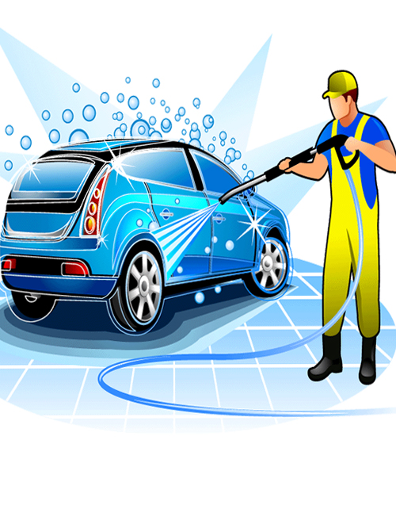
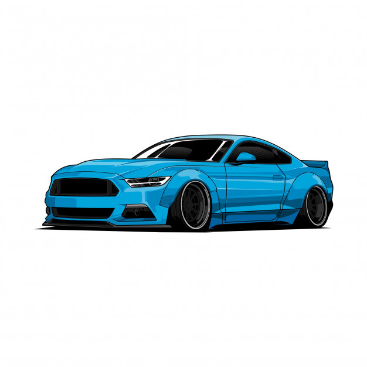
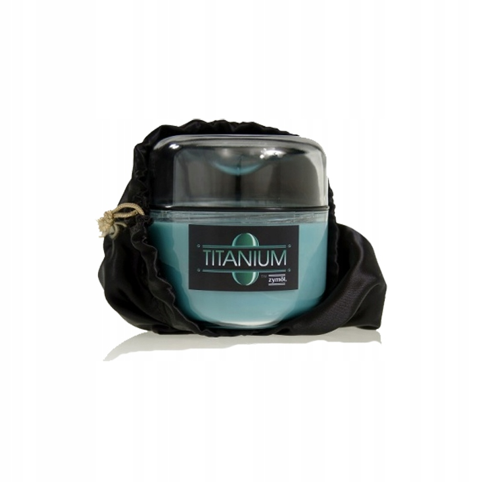

Mycie Podstawowe
Mycie wszystkich zewnętrznych elementów pojazdów włącznie z kołami za pomocą wysokiej jakości szamponu oraz gąbki techniką na dwa wiadra, oraz osuszanie samochodu do sucha za pomocą mikrofibry
Mycie Kompleksowe
Wszystkie czynności mycie podstawowe, wosk natryskowy, odkurzanie wnętrza, mycie szyb, plastiki wewnętrzne, nabłyszczanie opon i plastikowych elementów zewnętrznych; zapach w areozolu.
Woskowanie
Woskowanie w całości odbywające się w procedurze ręcznej, przy użyciu wosku w postaci płynnej, jest najtrwalszym sposobem zabezpieczenia pojazdu za pomocą wosków i jest w stanie przetrwać na lakierze do 6 miesięcy.
